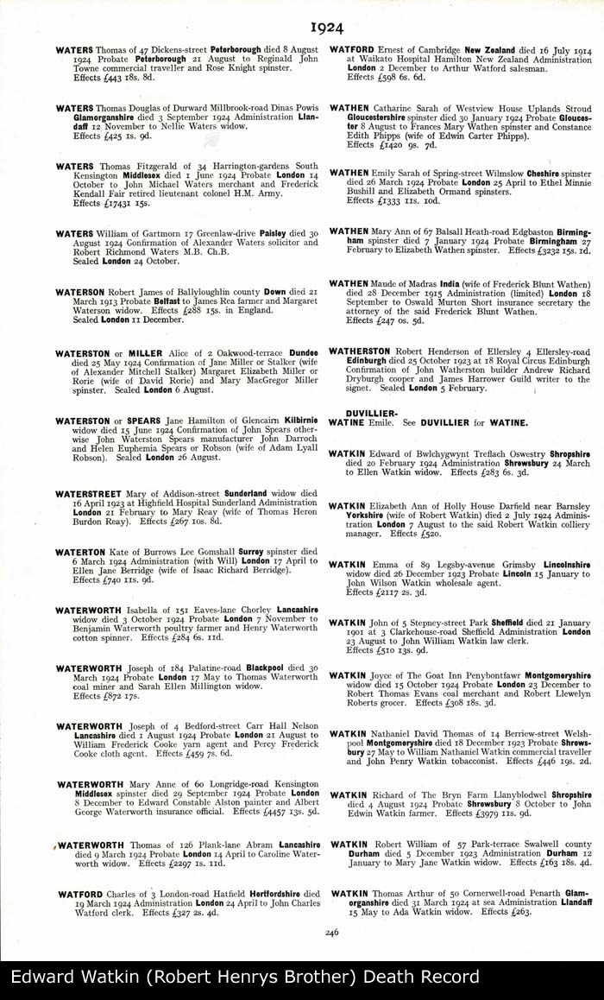

Jane BYWATER b. 29/04/1838 d. After 1901
Jane BYWATER b. 29/04/1838 d. After 1901 - Overview
| Name | Full Name | Jane BYWATER |
| Forename | Jane | |
| Surname | BYWATER | |
| Sex | Female | |
| Birth | 29/04/1838, Llanyblodwel, Shropshire, England | |
| Death | After 1901 | |
| Parents | John BYWATER x Mary JONES [Family] | |
| Spouse | John WATKIN b. Between 04/1832 and 1833 [Family] | |
| Children | 1. Edward WATKIN b. 1858 d. 20/02/1924 2. Mary WATKIN b. Between 04/1860 and 1861 3. Sarah WATKIN b. Between 04/1863 and 1864 4. Emma WATKIN b. Between 04/1865 and 1866 5. Robert Henry WATKIN b. 16/05/1868 d. 02/1958 6. David WATKIN b. Between 04/1872 and 1873 7. Daniel WATKIN b. Between 04/1875 and 1876 8. George WATKIN b. Between 04/1877 and 1878 9. Watkin WATKIN b. About 12/1880 10. Maria WATKIN b. About 12/1880 11. John Bywater WATKIN | |
| Change Date | Date | 24/05/2011 |
| Time | 00:25 | |
Jane BYWATER, only child of John BYWATER and Mary JONES [Family], was born on 29/04/1838 in Llanyblodwel, Shropshire, England. Jane died after 1901 aged about 63. She was christened on 29/04/1838 in Llanyblodwel, Shropshire, England. She was baptized on 29/04/18381 in Bryn Hall, Bryn Llanyblodwell, Shropshire, England. On 06/06/1841 Jane resided in Bryn Hall, Bryn Llanyblodwell, Shropshire, England. She resided on 30/03/1851 in Bryn Hall, Bryn Llanyblodwell, Shropshire, England. Jane resided on 07/04/1861 in Bryn Hall, Bryn Llanyblodwell, Shropshire, England. Jane resided in 1871 in Olde Bryn Cottage, Bryn, Llanyblodwell, Shropshire, England. In 1881 she resided in Olde Bryn Cottage, Bryn, Llanyblodwell, Shropshire, England. In 1901 Jane resided in Tanat Cottage, Llanyblodwel, Shropshire, England. Jane's mother, Mary dies when Jane is c. 1 year old and no trace of her father exists after this. She is Christened on April 29 1838 and is raised by her grand parents at Bryn Hall, Llanyblodwel (IGI) She lives at Bryn Hall with the Jones through 1841, 1851 and 1861 census although by 1858 she has married John Watkin who has also moved in to Bryn Hall. Oddly the Jones list her as a niece and daughter on 2 of the census forms but we are convinced she is the daughter of Mary junior. By 1851 her paternal grandmother, Jane Bywater nee Evans is living nearby. In 1859 she has her first child Edward at Bryn Hall but by 1861 Jane and John have moved to Old Bryn Cottage where they raise the rest of their family and live past 1881. Looks like she could not read or write as she signed Roberts birth cert with an X. By 1901, as widow she has moved to live with son George and grandson Frank at Tanat Cottage, and works as a charwoman. 7 sons and 4 daughters listed. |  |
Children
| i | Edward WATKIN2 was born in 1858 in Bryn Hall, Bryn Llanyblodwell, Shropshire, England. Edward died on 20/02/1924 aged about 66. In 1858 he resided in Bryn Hall, Bryn Llanyblodwell, Shropshire, England. In 1911 he resided in Bwlchgwynt, Treflach, Wales. In 1911 he was a Casual farm labourer in in Bwlchgwynt, Treflach, Wales. Edward resided in 1924 in Bwlchgwynt, Treflach, Wales. |  | ||
| ii | Mary WATKIN was born between 04/1860 and 1861. In 1871 she resided in Olde Bryn Cottage, Bryn, Llanyblodwell, Shropshire, England. |  | ||
| iii | Sarah WATKIN was born between 04/1863 and 1864. In 1871 she resided in Olde Bryn Cottage, Bryn, Llanyblodwell, Shropshire, England. | | ||
| iv | Emma WATKIN was born between 04/1865 and 1866. In 1871 she resided in Olde Bryn Cottage, Bryn, Llanyblodwell, Shropshire, England. | | ||
| v | Robert Henry WATKIN3 was born on 16/05/1868 in Bryn Hall, Bryn Llanyblodwell, Shropshire, England. He died in 02/1958 in Oswestry, Shropshire, England aged about 90. On 02/04/1871 Robert resided in Olde Bryn Cottage, Bryn, Llanyblodwell, Shropshire, England. Robert resided on 03/04/1881 in Olde Bryn Cottage, Bryn, Llanyblodwell, Shropshire, England. He resided in 1898 in Park Gate, Shropshire, England. Robert was a Worked as "horse tender" in coal mine in 1901 in Maybe Ifton Colliery OR Black Park Colliery. In 1901 Robert resided in Glyn Morlas, St Martins, Shropshire Road, England. In 1903 he resided in Glyn Morlas, St Martins, Shropshire Road, England. In 1903 Robert was a Coal Tiller/Filler in Maybe Ifton Colliery OR Black Park Colliery. On 02/04/1911 he resided in 15 Glyn Morlas, St Martins, Oswestrry, Shropshire, England. Robert resided in 1931 in 1 Oswald Place, Oswestry, Shropshire, England. Robert was a Agricultural Labourer in Dairy Work in 1931 in Oswestry, Shropshire, England. In 1931 he was a Gravedigger in Oswestry, Shropshire, England. Robert resided about 1940 in 23 Upper Brook Street Oswestry, Shropshire, England. |  | ||
| vi | David WATKIN was born between 04/1872 and 1873 in Olde Bryn Cottage, Bryn, Llanyblodwell, Shropshire, England. In 1881 David resided in Olde Bryn Cottage, Bryn, Llanyblodwell, Shropshire, England. | | ||
| vii | Daniel WATKIN was born between 04/1875 and 1876. In 1881 he resided in Olde Bryn Cottage, Bryn, Llanyblodwell, Shropshire, England. | | ||
| viii | George WATKIN was born between 04/1877 and 1878. In 1881 George resided in Olde Bryn Cottage, Bryn, Llanyblodwell, Shropshire, England. | | ||
| ix | Watkin WATKIN was born about 12/1880. He resided in 1881 in Olde Bryn Cottage, Bryn, Llanyblodwell, Shropshire, England. | | ||
| x | Maria WATKIN was born about 12/1880. Maria resided in 1881 in Olde Bryn Cottage, Bryn, Llanyblodwell, Shropshire, England. | | ||
| xi | He resided in 1871 in Olde Bryn Cottage, Bryn, Llanyblodwell, Shropshire, England. John resided in 1881 in Olde Bryn Cottage, Bryn, Llanyblodwell, Shropshire, England. | |
Notes
1. Christened at Llanyblodwel. according to IGI records
2. Born in Llanyblodwel (presumably at Bryn Hall) where John and Jane started there married life with Jane's grandparents. Edward worked as a casual farm labourer in Bwlchgwynt. He still lived here at the time of his death in 1924.; [Note Record]
3. Born in Llanyblodwel at Olde Bryn Cottage, Robert worked as a labourer. After marriage in 1898 in Chirk, he moved to Glyn Morlas, St Martins, Shropshire Road and worked as a horse tender in a coal mine. In 1903 he is listed in coal tiller/filler on Williams birth cert (Possibly Ifton Colliery or Black Park Colliery). His wife Margaret Jane Davies had a father working in the coalmines also, so it is possible that he worked in the mine before 1896 and may have met the Davies here. Margarets grew up beside the Black Park colliery so its likely that they both worked here rather then the nearby Ifron Colliery. By 1911 he was living in 15 Glyn Morlas, St Martins and working as a agricultural labourer (dairy work) Assumed to live at 1 Oswald Place, Oswestry in 1931 (where William lived at the time of his marriage). At this point Robert was working as a gravedigger. In the 30/40s he had moved to 23 Upper Brook Street Oswestry, Shropshire. Later in life he was hit by a motor bike and never fully recovered. In fact it is said that he became paranoid in later life and believed his partner was trying to poisoned him.; [Note Record]
Web page generated using a registered copy of GedScape software, licensed by Mark Watkin